Finally, the next figure shows te comulative distances of this path. 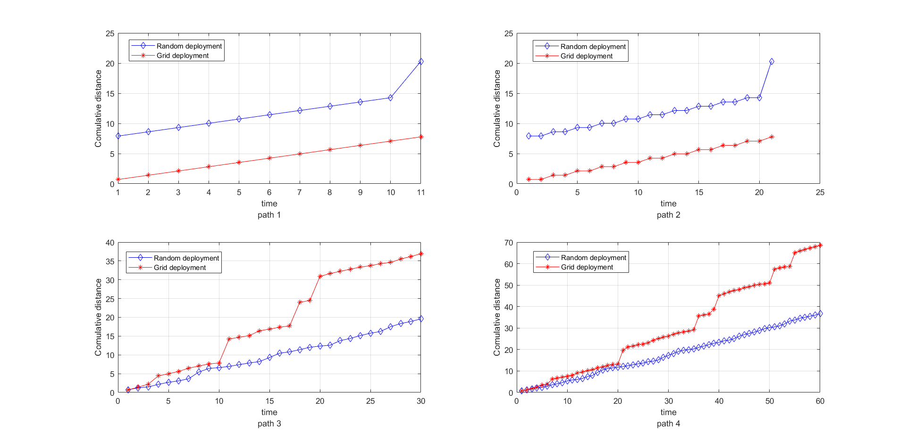
Finally, the next figure shows te comulative distances of this path. 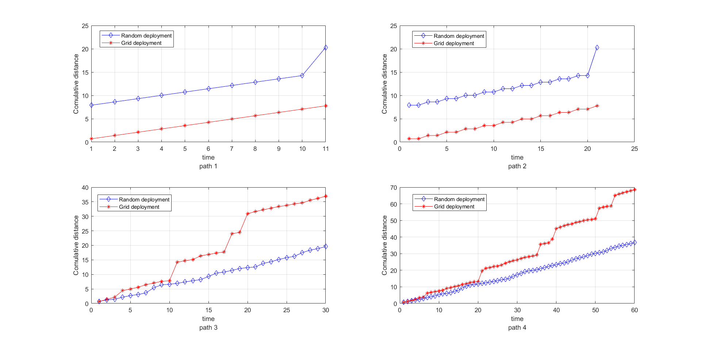Antonio Minonne, Anna Paola Musio, Samuele Paone, Salvatore Pappalardo
This project work is about simulating an indoor localization and tracking system through a wireless sensor network (WSN) in both centralize and distributed way; moreover we considered sensors deployment in a randomized and fixed grid cases. After implementing all the necessary code for the simulations, we performed a series of tests in order to compare the algorithms and evaluate their own performance.
There are three categories of files:
We shall explain each file within each category.
These are the most important files. They contain the code used for generating data and analyze it. The detailes of the experiments are discussed in the “Result and Analysis” section.
There are 3 files: IST.m, DIST.m and ODIST.m each of which is exactly what it sounds like. They are implemented as functions, as everything in this project but the experiments, for ease to use.
The Iterative Soft Thresholding algorithm is centered. It works as following:
target parameter is a scalar (i.e. size(target) == [1 1]), then, it is randomly positioned. When randomly-positioned, the coordinates are the same with the same seed.size(x0) == [1 1]), then x0 is initialized at 0.x vector is mantained, due to the relative small dimensions. Another important thing is that early stopping is applied. When the 1-norm (or the 2-norm depending on the case) of x drops below stopThreshold the algorithm is stopped. This is equivalent to saying that the algorithm converged.showPlots is true, three figures are shown: the first contains a representation of the room, with target, best estimate and sensor positions; the second one shows the difference x(t)-x(t-1) for each t and for each component of x; the last one show x when consensus is reached.The IST_step function does two operations on x . It firstly computes applies the gradient descent to x and then applies the soft-thresholding operator to the result of the former operation.
The DIST algorithm is implemented pretty much as the IST one. We shall describe the differences using the same numerations of the previous paragraph.
Q computation: it is made through the init_Q helper function, but this time is very useful, since its informations will be used for applying the Distribute Iterative Soft Thresholding. A sidenote is that eps is a number in the range [0, 1] which correspond to the percentage for the actual ϵ in the Q matrix (using uniform weights). Specifically is the percentage between 0 and the maximum ϵ permitted, which is $\frac{1}{max(d_i)}$ where di is the in-degree of the i-th sensor.
DIST algorithm: during this cycle, the DIST algorithm is applied to each x of each sensor. In this code there are checks over the values of x. These were added when trying to apply the algorithm with more than one measurement per sensor or when the number of sensors is changed. The complete explanation is in the “Extensions” section. For each sensor is then computed the average state of the neighbors and the DIST_step function is called. When the difference of the 1-norm (or 2-norm) average of the vectors is below stopThreshold the algorithm stops. This is unfeasible in real-life, but it was implemented in this way in order to compare it with the DIST algorithm.
The big difference here is that x does not contain the full history of the x vector, but only the best estimate. Furhtermore, x_diff contains only the euclidean norm of x for each sensor for each time t. Finally, p_bar is computed as the average of the coordinates of all the best estimates.
Exactly as IST_step, DIST_step computes the gradient descent with respect to the average state of the neighbors and then applies the soft thresholing operator.
We shall write a full list with the brief explanation of each file. Some custom notation is introduced.
min_radius meters apart. Default: min_radius = 1.The objective of this experiment is to have a performance estimation of DIST and ODIST algorithms.
We evaluate DIST algorithm on 100 examples. For each example:
We generate 100 examples in this way: - The first half, with a random position of the target and a grid deployment of sensors ( all sensors are at the same distace from each others). - The second half, with a random position of the target, and a random deployment of sensors.
With the previously shown settings we computed the successful rate and found out that none of the 100 runs could correctly localize the target. This result is peculiar, especially because the O-DIST performed so well in comparison. We think that somehow the initial conditions heavily influenced its behaviour. We didn’t have the chance to investigate our hypotesis, though. We computed the average distance between the estimate and the real target using the following formula, obtaining the followig value:
$$
\bar{d}=\frac{1}{n}\sum\limits_{i=1}^{n_{example}} ||\bar{x}_{(i)}-\tilde{x}_{(i)}||_2= 4.3247
$$
where: - x̄(i) is the real target position - x̃(i) is the estimated position of the target
Furthermore we plotted the frequency histogram of the error using 10 range buckets. 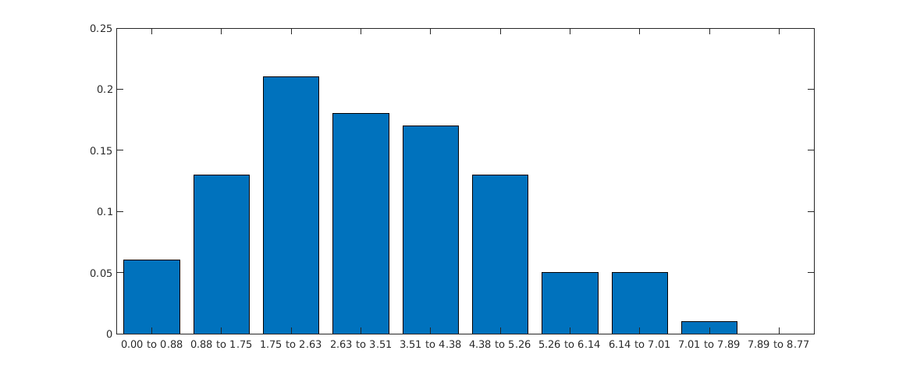 The variance of this error is 2.9336
We evaluated the ODIST algorithm on 4 different path. For each path we ran ODIST algorithm with 2 different deployment of sensors:
At the end we computed the distance between the estimate position and true position for each target in the path, and also we computes the cumulative distance between the true path and the estimate path for each sensor deployment.
We generated 4 different path:
With the previously shown settings, we computed the cumulative distance for each point of the path. We saw that, in general, the algorithm performed quite well. The figure below shows the error for each point of the path.
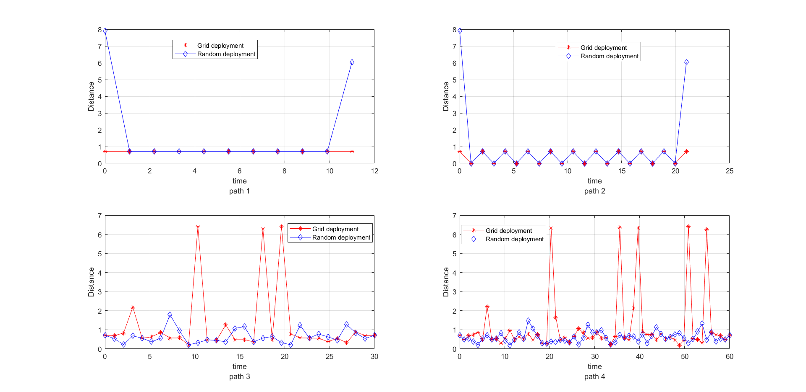 We noticed that the random sensors deployment performed much better than the grid deployment. The most likely reason for this behaviour is due to the intrinsic simmetries of this particular type of deployment, indeed the target position splits the sensors in such a way that at least two sensors measure the same value (without taking noises into account) with the exceptions of some extreme cases. The following figures show the 4 sample paths.
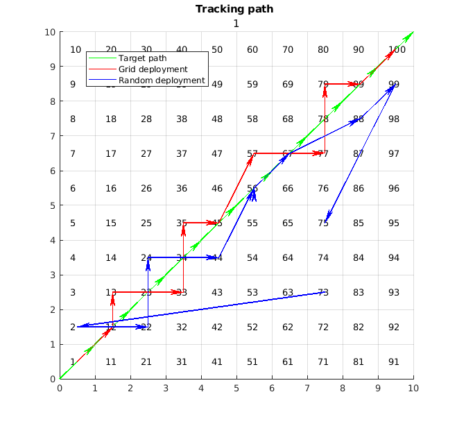 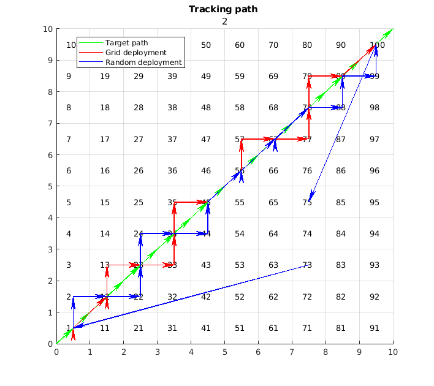 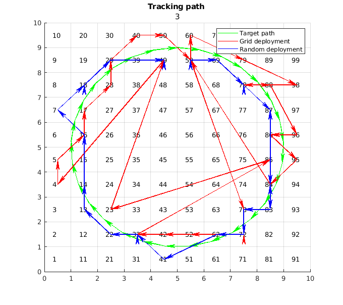 Finally, the next figure shows te comulative distances of this path. 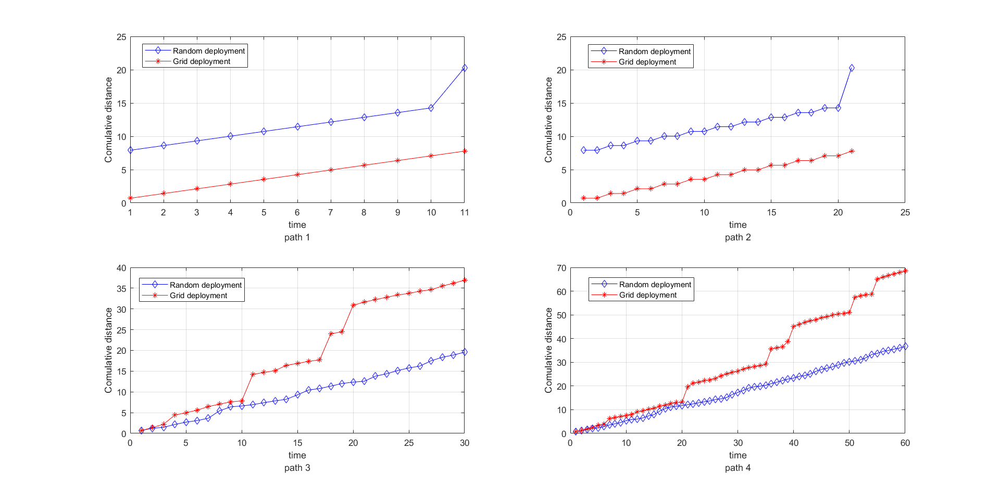
Experiment B is about comparing IST-DIST performances.
In order to set a stop criterion we need to measure the “distance” between predictions taken at t and t-1, hence the question is which definition of distance to use?
We took into consideration l1 norm, l2 norm and the sum of all the states, so basically we want to know which norm has the same order of magnitude for both the algorithms.
The following figure shows how this three norms performed. 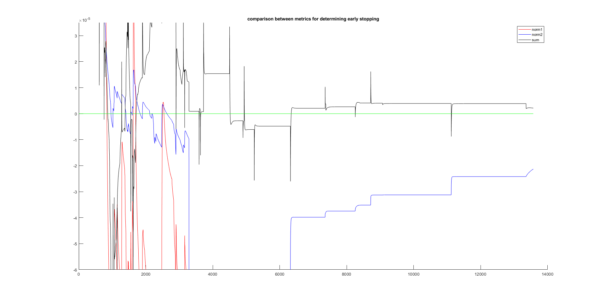 As notable from this figure, the most similar metrics we can use is the sum, but we can’t use it because it goes under 0 (indeed it’s not an actual norm). That’s a great indication of “overshoot”, meaning that some components of the state go over the minimum of the function and try to get back. Due to this considerations we decided to use the l1 norm.
| IST | DIST | |
|---|---|---|
| Avg absolute error | 4.345 | 4.442 |
| Error variance | 3.089 | 3.390 |
| Success rate | 0.000 | 0.000 |
| Accuracy | 0.340 | 0.310 |
| Avg. convergence time | 1.728e+04 | 3.640e+03 |
These are the outcomes obtained after testing the algorithms 100 times moreover we decided to take into consideration other key performance indicators; the following explains the indicators that might be more ambiguous:
Aside from the requested metrics, we decided to plot also the error probability distribution. We created this plot first dividing the x-axis into 10 homogeneous intervals inside this range [μ − σ, μ + σ] (where μ and σ are respectively the mean and the variance of the error), the we counted how many times the algorithms made an error inside each interval.
In this case we took the absolute error, meaning the euclidean distance between the target and the estimate. 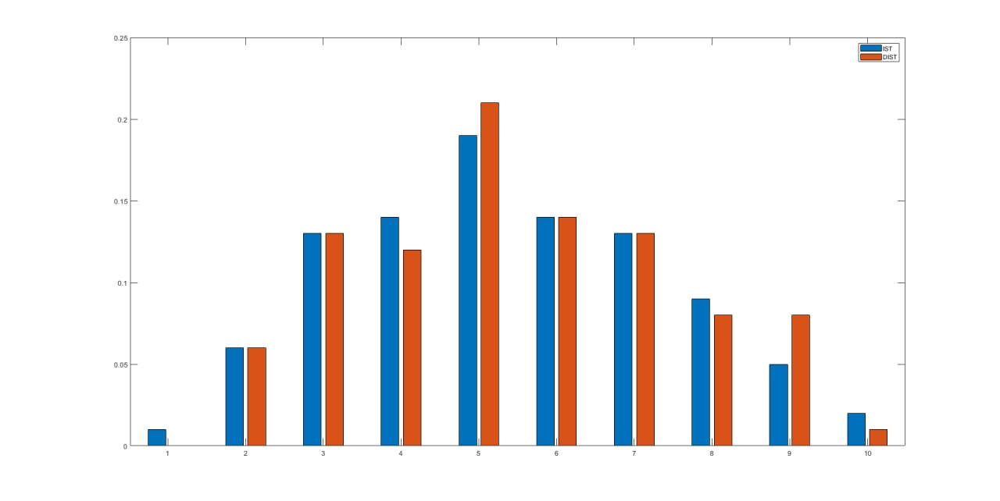 As we can see the error probability distribution for each algorithm is gaussian and they are really similar meaning that the two algorithms perform almost the same.
The objective of this experiment is to verify the relationship between the essential spectral radius of the matrix Q and the convergence time of the system. The setup for this experiment is the following:
x over each sensor ($\overline{x} = \frac{1}{n}\sum_{i=1}^n{x_i}$).A total of 60 different sensor deployment were run. For each run, a total of 30 points were evaluated, each point corresponding to a different value of the essential spectral radius.
Analyzing the result of this experiment wasn’t simple. Each run produced a completely different outcome which wasn’t simple to generalize. To address this problem, as explained above, we decided to run 60 different experiments each with 30 different eigenvalues.
The nex step was to analyze the obtained data as a whole and since there were no two equal eigenvalues we adopted the following procedure:
uniquetol. Two values u and v, based on the matlab reference, are whithin tolerance if abs(u-v) <= tolerance * max(vector) where vector correspond to the values we want to group toghether.This process was repeated three times with three different relative tolerance values. In the figure the three results are shown. 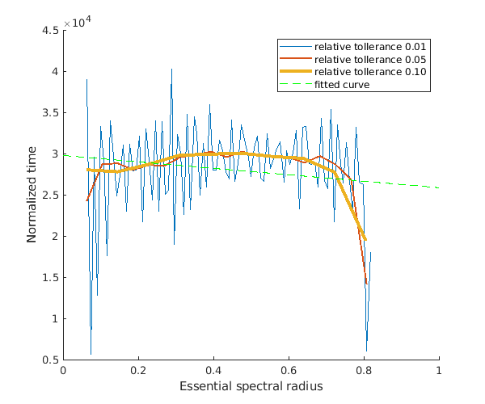 Furthermore, the green line represents the linear regression of the curve in yellow, which is the one computed with a relative tolerance of 10e-2.
The linear regressions have a negative angular coefficient, even though small (-0.044), which describes the tendancy of the algorithm to faster converge given a higher essential spectral radius.
In this section we shall present some extra implementations we made. No formal experiment was run, but a couple of interesting observations came out.
The first thing we tried to do was to make the sensors measure more than one time. A good way to generate a better dictionary might consist in mooving the target around inside the cell for the sensors to pick up a slightly different measurement for the specific cell. This was not done since in the simulation there was added noise. The noise guarantee different measures for each time instant. An argument one might do is as following: if the noise is too small, there is no added information in doing a second measurement, or at least is very small, so moving the target around inside the cell might increase the gathered informations needed for the target localization.
Another interesting fact was how the value of k changed when adding sensors or measurements. We noted that k could reach dramatically high values. This only happened, though, applying Feng’s theorem which is a great tool in this context. The only problem was that, at some point, if we only added measurements, some informations were lost applying the theorem. That’s due to the fact that the matrix A stopped to being full matrix when m was too big.
For using more sensors, as explained in the previous paragraphs, we needed to disable Feng’s theorem. This way we were able to localize the target in a pretty much perfect way. With 100 sensors, each performing 20 measurements, the results were stunning. Surely, it is not that practical to have one sensor per cell in real life. Another important point was the sensibility of the algorithm to the τ parameter. In order for the system to not diverge or go to zero, we needed to carefully change its value until we found the sweet spot for the given configuration. The next table shows three parameter for different configurations.
| Configuration | τ |
|---|---|
| Using Feng, n = 25, 1<=m<=4 | 0.7 |
| Not using Feng, 25<=n<=50, m=20 | 0.378e-6 |
| Not using Feng, n=100, m=25 | 1e-7 |